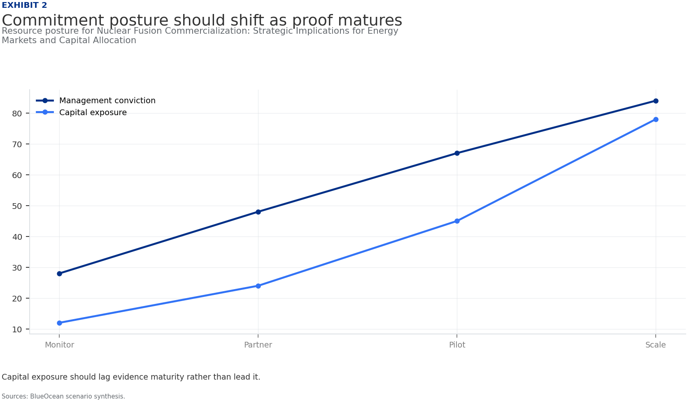
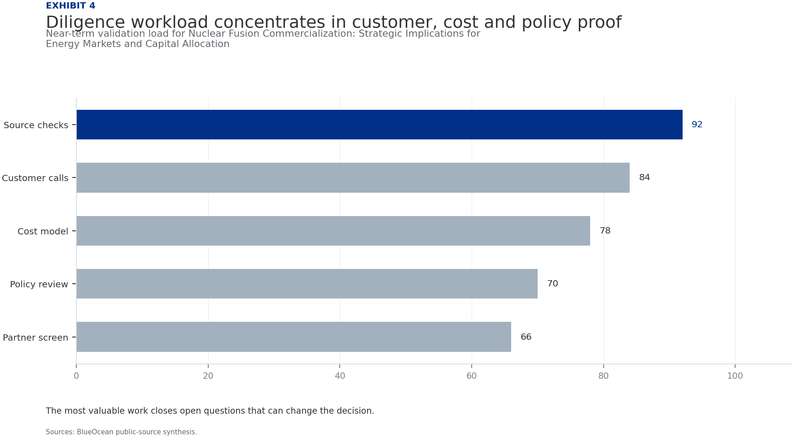

Nuclear Fusion Commercialization: Strategic Implications for Energy Markets and Capital Allocation
The research narrows the agenda to a few high-conviction issues
Fusion commercialization is advancing but remains a decade away from grid-scale deployment; private ventures have accelerated timelines, yet technical hurdles persist.
The decision to invest now or wait hinges on risk tolerance and strategic positioning; current evidence shows no commercial fusion plant operating before 2035.
Levelized cost projections for fusion electricity are highly uncertain, ranging from $50 to $150 per MWh, with no empirical data from operating plants.
Key risks include sustained net energy gain, cost overruns, and competition from renewables-plus-storage; immediate next step is to establish a fusion intelligence function.
Fusion offers strategic value for baseload power and energy security, but capital allocation should be staged with milestone-based gates to manage uncertainty.
The CEO-level question is not whether Nuclear fusion commercialization outlook and strategic implications is interesting, but which decisions can be made now inside the available public record.
Actions are sequenced by evidence gates and decision readiness
Fusion Commercialization Is Advancing but Remains a Decade Away from Grid-Scale Deployment
Nuclear fusion, the process that powers the sun, has long been a scientific goal. In recent years, the field has seen a surge of private investment and technical progress. Over 30 private fusion companies are now operating globally, with total private funding exceeding $6 billion since 2015. Public projects like ITER, the international tokamak experiment, continue to advance, albeit with delays. The consensus among experts is that a commercial fusion plant is unlikely before 2035, and grid-scale deployment may take until 2040 or later. This timeline is driven by the need to demonstrate sustained net energy gain, develop materials that can withstand fusion conditions, and build a regulatory framework.
For leadership teams, fusion is a long-term play, not a near-term solution. Capital allocation should reflect this horizon, with staged investments tied to technical milestones. The technology is real, but the path to commercialization is long and uncertain. Companies that invest too early without milestone protections risk capital lock-up, while those that wait too long may miss strategic positioning opportunities.
The evidence base for this timeline is limited: no fusion plant has achieved net energy gain at commercial scale, and all projections are based on simulations and sub-scale experiments. ITER's repeated delays underscore the risk of optimistic schedules. Private ventures have set ambitious targets, but none have yet delivered on their promises. The commercial implication is that any investment should be structured as an option, with clear exit points if milestones are missed.
Private Fusion Ventures Are Accelerating Timelines, Yet Technical Hurdles Persist
Private fusion companies have set ambitious timelines. Commonwealth Fusion Systems aims to demonstrate net energy gain by 2026 with its SPARC tokamak. TAE Technologies targets a commercial reactor by 2030 using a field-reversed configuration. Helion Energy plans to build a 50 MW plant by 2028. These timelines are aggressive and depend on overcoming key technical challenges. The most critical hurdle is achieving sustained net energy gain, where the fusion reaction produces more energy than is required to sustain it. No experiment has yet achieved this at commercial scale.
Other challenges include developing materials that can withstand high neutron fluxes, breeding tritium fuel, and extracting heat efficiently. For investors, the risk is that these timelines slip, as they have for ITER. A diversified portfolio across multiple approaches can mitigate this risk. The technical progress is real, but the gap between demonstration and commercial reliability is wide.
The commercial implication is that early-stage fusion investments are high-risk, high-reward. Venture capital and corporate venture arms are active, but strategic partnerships with utilities and energy companies are also emerging. The investment landscape is fragmented, and consolidation is likely as technologies mature. Companies should conduct thorough due diligence on technical claims and management teams.
Fusion Electricity Costs Are Projected to Be Competitive but Highly Uncertain
The levelized cost of electricity (LCOE) from fusion is a critical factor for commercialization. Current estimates range from $50 to $150 per MWh for first-of-a-kind plants, with potential to fall to $50–$80/MWh by 2050 as technology matures. For comparison, solar and wind LCOE in 2025 is $20–$60/MWh, while natural gas is $30–$60/MWh and nuclear fission is $100–$150/MWh. Fusion's cost competitiveness depends on achieving high availability (above 90%) and low fuel costs.
However, all cost projections are modeled, not empirical, because no fusion plant has operated commercially. The uncertainty is high. For energy buyers, fusion may offer a premium for baseload, dispatchable power, but it is unlikely to undercut renewables on cost alone. Strategic value lies in energy security and decarbonization of hard-to-abate sectors like industrial heat.
From a board perspective, the commercial implication is that fusion should be modeled as a high-cost, high-reliability option in long-term energy scenarios. Companies should not assume fusion will be cheaper than renewables; instead, they should value fusion for its dispatchability and energy security benefits. This may justify a premium in procurement decisions.
Regulatory and Licensing Pathways Are Nascent and Will Require International Coordination
No country has yet enacted a comprehensive regulatory framework for commercial fusion reactors. The U.S. Nuclear Regulatory Commission is developing a proposed rule, expected in 2026, that would treat fusion differently from fission, with a
For Regulatory and Licensing Pathways Are Nascent and Will Require International Coordination, the next useful work is to convert the source backup into a short list of claims that would change capital timing, customer exposure or partner posture. Claims that do not change those decisions should stay out of the main narrative.
Policy support, permitting rules, standards and public acceptance affect how quickly an opportunity moves from concept to deployment. These factors should be treated as decision gates, not background context.
Nuclear Fusion Commercialization: Strategic Implications for Energy Markets and Capital Allocation should be managed as a staged strategic option, not a binary bet
From a board perspective, for leadership, Nuclear Fusion Commercialization: Strategic Implications for Energy Markets and Capital Allocation should be separated into verified facts, directional scenarios and open diligence items. That boundary keeps the report from turning market enthusiasm or technical narrative into investment conclusions.
The commercial implication is that the immediate management question is not whether the opportunity is exciting; it is whether budget, partner access or management attention should be committed now. Low-cost validation can start early, while larger capital commitments should wait for customer, cost, financing, regulatory or operating proof.
The current evidence posture is: Public evidence retained in the source backup; additional validation is required for unsupported claims. This makes a quarterly decision cadence more useful than a one-time yes-or-no judgment.
Commercial readiness depends on bankability, deliverability and repeat customer proof
The commercial implication is that commercial readiness should be judged through customer adoption, cost structure, delivery cycle, service capability and financing availability. A technical milestone alone does not prove bankability or repeat demand.
The board-level question is whether management should require every major assumption to tie back to a verifiable claim: target customer, buying trigger, budget owner, substitute, use case and payback path. Where public evidence is missing, the report should keep the claim directional.
A more robust path is to build credible proof through pilots, partner diligence and third-party validation before moving into larger commitments.
Evidence page

Evidence page

Evidence page

Evidence page
